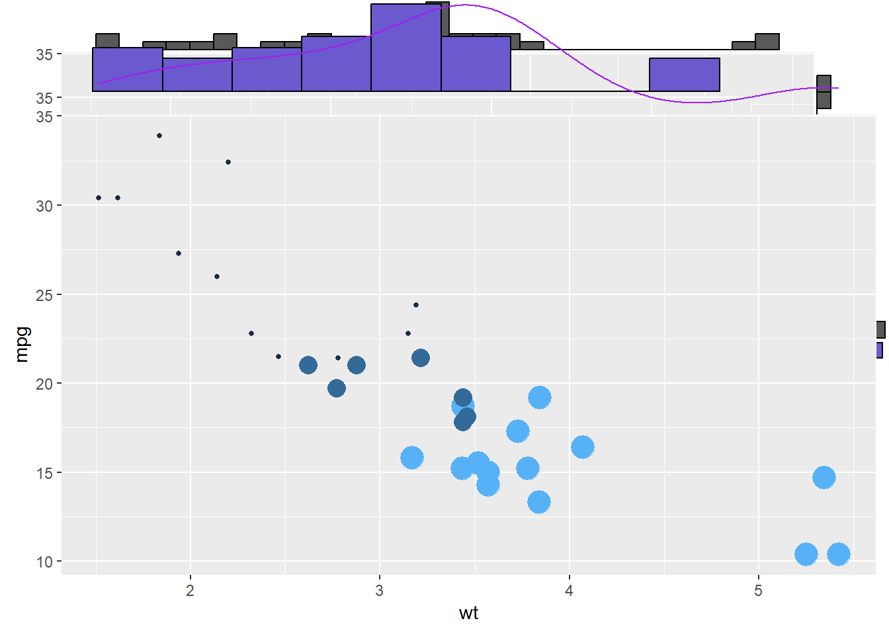
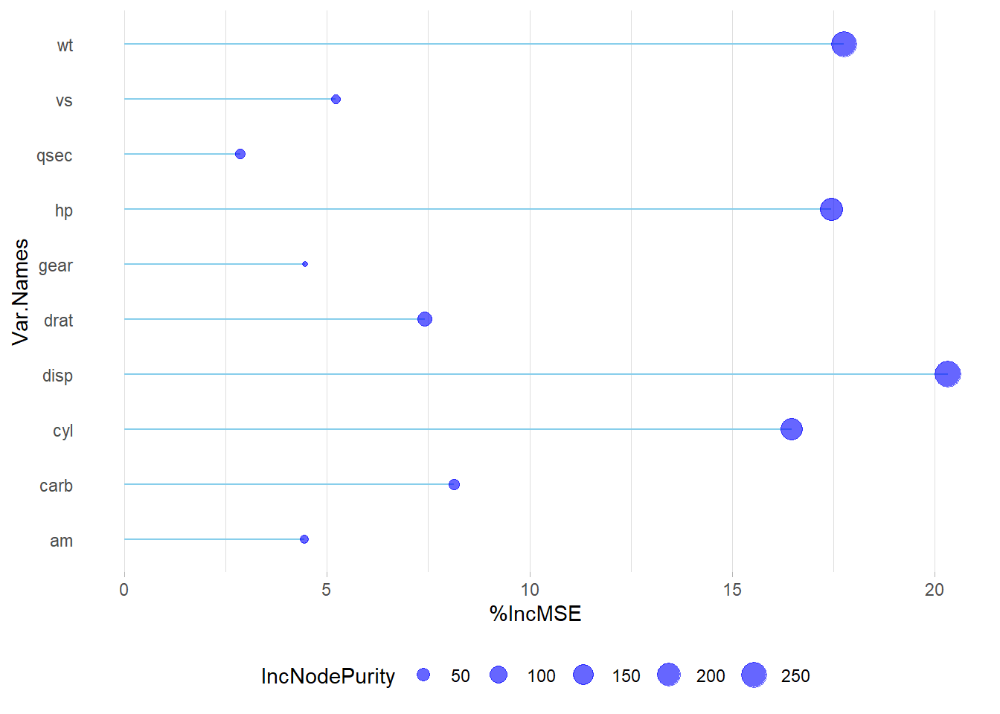

# Use Google Drive to connect Dataset with library of 'googleDrive'
id <- "1nM0Cr-gVFF9UjvxSZXHNfFnrDWIUoTHi"
total_list <- read.csv(sprintf("https://docs.google.com/uc?id=%s&export=download", id))
# Filter out rows with non-numeric values in the 'streams' column
filtered_spotify_data <- total_list %>%
filter(!grepl("[a-zA-Z]", streams))
# Sort the filtered dataset by the 'streams' column in descending order
sorted_filtered_spotify_data <- filtered_spotify_data %>%
arrange(desc(streams))
# Create HTML view of Dataset
DT::datatable(head(sorted_filtered_spotify_data), editable = list(
target = 'row', disable = list(columns = c(1, 3, 4))
))1 Assignment 1
2 | ABOUT ME
Greetings!
I’m Sezer Turkmen, a software developer whose journey spans the realms of architecture and coding. In a nutshell:
2.0.1 From Architect to Code Creator: My Transition
I initially ventured into the world of architecture, my first passion. My studies took me to Italy, where I delved into multi-scale architecture and sustainable design, honing my eye for detail and love for harmonious structures.
After working as an architect for a considerable period, I felt the magnetic pull towards coding. The allure of shaping digital landscapes was irresistible, prompting a career shift.
2.0.2 Mastering Full Stack Development
As a software developer, I immersed myself in coding, mastering Java and venturing into full-stack development. I used technologies like Spring Boot and React to craft dynamic, user-friendly applications. Kubernetes and Docker added efficiency and scalability to my toolkit, bridging the worlds of traditional and digital architecture.
My journey is guided by the belief in perpetual learning. I attended a coding bootcamp to refine my skills and gain practical insights, cementing my passion for coding. As a software developer, I enjoy creating elegant, user-centric applications.
Currently, I’m pursuing a master’s in Information Technologies at MEF University, ensuring my knowledge stays cutting-edge.
2.0.3 Life Beyond Tech
Outside of coding and architecture, I find joy in cooking, a creative outlet where flavors and textures are my canvas. Staying active is another passion. Whether it’s hitting the gym or enjoying indoor cycling with a spirited playlist, I cherish the rhythm and precision of physical activity.
2.0.4 The Future Awaits
I’m Sezer Turkmen, a full-stack developer, architect, and a lover of life. My mission is to blend creativity and technology, one line of code at a time. Thank you for getting to know me!


3 | DISCOVER THE POSIT
3.0.1 YouTube Channel | The open-source data science company for the individual, team and enterprise.
Teaching R online with RStudio Cloud
I chose to watch the video titled “Mine Çetinkaya-Rundel | Teaching R online with RStudio Cloud” for two main reasons. Firstly, I was interested in learning about effective online teaching methods for the R programming language, commonly used in data science. The video delves into the benefits of using RStudio Cloud for teaching, emphasizing its user-friendly approach. Additionally, I was drawn to the fact that the presenter, Mine Çetinkaya-Rundel, shares a Turkish background with me, which added a unique cultural perspective to the subject matter. The presentation covers tips and best practices for using RStudio Cloud effectively in the classroom, as exporting and grading student work and sharing data files.
4 | PROPOSE DATASET
4.0.1 Most Streamed Spotify Songs 2023
The ‘Most Streamed Spotify Songs 2023’ dataset is a fantastic choice for class demos. It offers insights into the music industry by showcasing popular songs and their attributes. Students can explore the science of hit songs, understand their impact through social media analysis, and learn about cross-platform music data. It’s engaging and up-to-date, making it an excellent teaching resource.
The Most Streamed Spotify Songs 2023 dataset contains a comprehensive list of the most famous songs of 2023 as listed on Spotify. The dataset offers a wealth of features beyond what is typically available in similar datasets. It provides insights into each song’s attributes, popularity, and presence on various music platforms. The dataset includes information such as track name, artist(s) name, release date, Spotify playlists and charts, streaming statistics, Apple Music presence, Deezer presence, Shazam charts, and various audio features.
5 | LEARN THREE R POST
5.0.1 Creating Stunning Visuals with ggplot2 and ggExtra
Visualizing the distribution of data is essential for understanding it better. In R, you can use ggplot2 and ggExtra to create informative charts.
ggplot2 is a popular tool for making all sorts of graphs. It’s user-friendly and versatile, letting you customize your plots easily.
ggExtra is like an upgrade for ggplot2, designed to make scatterplots and other graphs even more helpful. It adds histograms or density plots to the sides of your main chart, showing you how individual data points are spread out. This extra information helps you grasp your data’s patterns.
To use ggplot2 and ggExtra, first, make your main chart with ggplot2, and then use ggExtra’s function, ggMarginal(), to include those extra histograms or density plots. This adds depth to your visualizations, helping you understand data distributions better.
In a nutshell, ggplot2 and ggExtra are handy tools in R for exploring and presenting data, making your visualizations more informative and user-friendly.
# library
library(ggplot2)
library(ggExtra)
# classic plot :
p <- ggplot(mtcars, aes(x=wt, y=mpg, color=cyl, size=cyl)) +
geom_point() +
theme(legend.position="none")
# Set relative size of marginal plots (main plot 10x bigger than marginals)
ggMarginal(p, type="histogram", size=10)
# Custom marginal plots:
ggMarginal(p, type="histogram", fill = "slateblue", xparams = list( bins=10))
# Show only marginal plot for x axis
ggMarginal(p, margins = 'x', color="purple", size=4)
# Very basic chart
ggplot( mtcars , aes(x=mpg, y=wt)) +
geom_point()
5.0.2 Text Analysis || Text Mining in R
Text analysis, or text mining, is a vital tool for extracting insights from unstructured text data. It’s essential because it helps us understand, categorize, and derive meaningful information from sources like social media, customer feedback, research papers, and more. For instance, it enables sentiment analysis to gauge public opinions, topic modeling for content organization, and efficient information retrieval from large datasets. In R, a popular choice for text analysis, you can use libraries like ‘tm’ and ‘tidytext’ to perform tasks like text preprocessing and visualizing word frequency, as demonstrated in the provided code. This skill empowers you to make data-driven decisions and save time by automating text processing tasks. Happy text mining!
library(stringr)
#All functions in stringr start with str_ and take a vector of strings as the first argument:
x <- c("why", "video", "cross", "extra", "deal", "authority")
str_length(x) [1] 3 5 5 5 4 9str_c(x, collapse = ", ")[1] "why, video, cross, extra, deal, authority"str_sub(x, 1, 2)[1] "wh" "vi" "cr" "ex" "de" "au"#Most string functions work with regular expressions, a concise language for describing patterns of text. For example, the regular expression "[aeiou]" matches any single character that is a vowel:
str_subset(x, "[aeiou]")[1] "video" "cross" "extra" "deal" "authority"str_count(x, "[aeiou]")[1] 0 3 1 2 2 4#There are seven main verbs that work with patterns:
# str_detect(x, pattern) tells you if there’s any match to the pattern:
str_detect(x, "[aeiou]")[1] FALSE TRUE TRUE TRUE TRUE TRUE#str_count(x, pattern) counts the number of patterns:
str_count(x, "[aeiou]")[1] 0 3 1 2 2 4#str_subset(x, pattern) extracts the matching components:
str_subset(x, "[aeiou]")[1] "video" "cross" "extra" "deal" "authority"#str_locate(x, pattern) gives the position of the match:
str_replace(x, "[aeiou]", "?")[1] "why" "v?deo" "cr?ss" "?xtra" "d?al" "?uthority"#str_split(x, pattern) splits up a string into multiple pieces:
#fixed(): match exact bytes
#coll(): match human letters
#boundary(): match boundaries5.0.3 Random Forest in R
The randomForest package in R is a highly popular and effective tool for implementing ensemble learning techniques and constructing models based on decision trees. By harnessing the power of random forests, this package excels in producing reliable and precise predictions, making it well-suited for tasks involving high-dimensional datasets. Its versatility extends to both classification and regression challenges, where it can significantly enhance the quality of predictions by combining insights from multiple decision trees.
#library(randomForest)
#library(ggplot2)
set.seed(4543)
data(mtcars)
rf.fit <- randomForest(mpg ~ ., data=mtcars, ntree=1000,
keep.forest=FALSE, importance=TRUE)In R, random forest regression permits parameter experimentation, such as adjusting ntree and mtry to assess their effects on residuals and variance. Importance metrics encompass mean square error (MSE) and node purity. For reliable variable importance evaluation, prioritize MSE. In cases where predictors are exclusively numerical, prioritize MSE when metrics diverge. Visualize importance results using varImpPlot(), and for enhanced insights, create a combined plot that accentuates MSE outcomes, providing a comprehensive view of variable importance in random forest regression models.
# Get variable importance from the model fit
ImpData <- as.data.frame(importance(rf.fit))
ImpData$Var.Names <- row.names(ImpData)
ggplot(ImpData, aes(x=Var.Names, y=`%IncMSE`)) +
geom_segment( aes(x=Var.Names, xend=Var.Names, y=0, yend=`%IncMSE`), color="skyblue") +
geom_point(aes(size = IncNodePurity), color="blue", alpha=0.6) +
theme_light() +
coord_flip() +
theme(
legend.position="bottom",
panel.grid.major.y = element_blank(),
panel.border = element_blank(),
axis.ticks.y = element_blank()
)